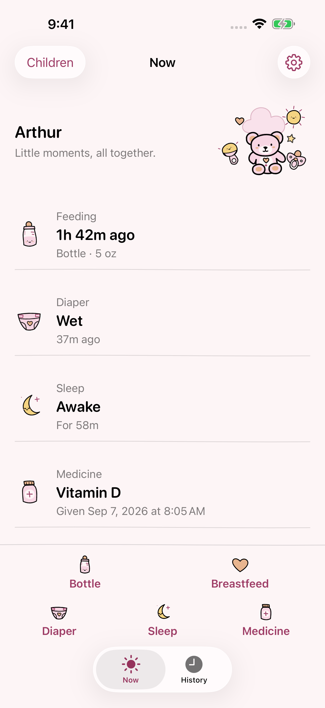
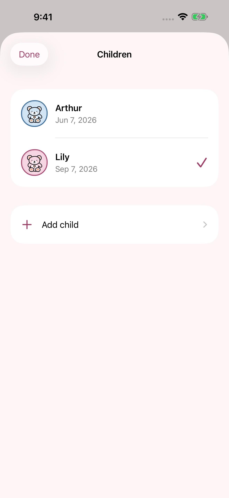
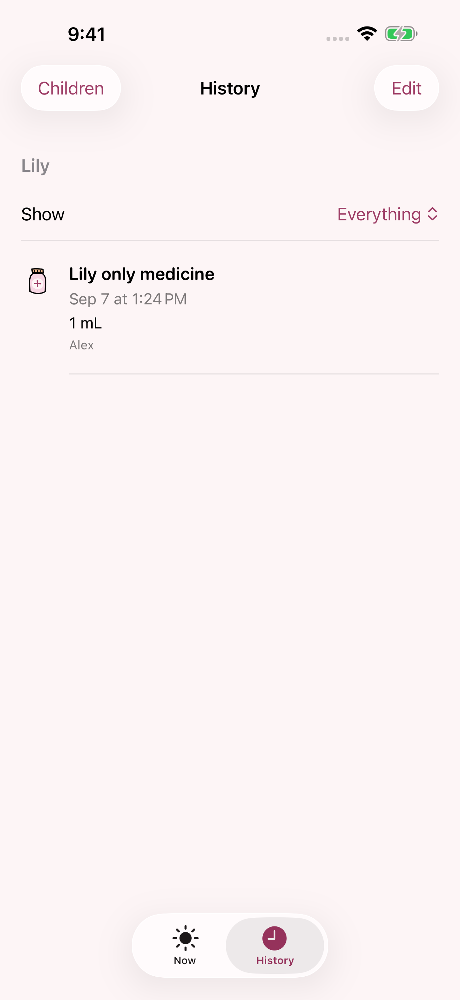
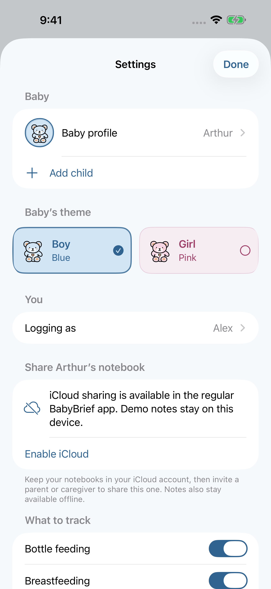
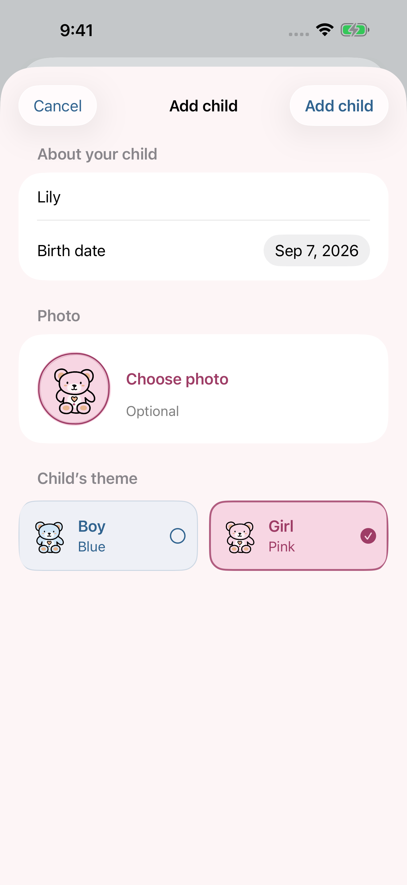

Now, at a glance
See the latest feed, diaper, sleep, and medicine status without digging through a dashboard.
BabyBrief keeps feeds, diapers, sleep, medicine, and small notes in one calm place—so exhausted parents can see what matters now.
Open BabyBrief and the next useful thing is already there. Choose only the care actions your family uses, then keep the rest out of the way.
See the latest feed, diaper, sleep, and medicine status without digging through a dashboard.
Add siblings, switch with a visible button, and keep each child’s history, photo, theme, and settings separate.
Invite a parent or caregiver to one child’s notebook through Apple’s private iCloud sharing.
Hand-drawn nursery doodles, blue or pink themes, dark appearance, Dynamic Type, and Reduce Motion support.
Simple screens, clear labels, and a little warmth for the parts of parenting that happen on too little sleep.





Both parents can open the same child’s notebook, see the latest care, and add the next note. Settings that belong to the notebook travel with it too.
Keep siblings in separate notebooks with their own history, photo, theme, and tracking choices.
Record a bottle, breastfeed, diaper, sleep, or medicine from Now, with an optional note.
Enable iCloud and invite a caregiver to the notebook that belongs to this child.
BabyBrief is built around local storage and opt-in iCloud sharing. It has no advertising or third-party analytics, and the optional photo is prepared on the device before it is saved.